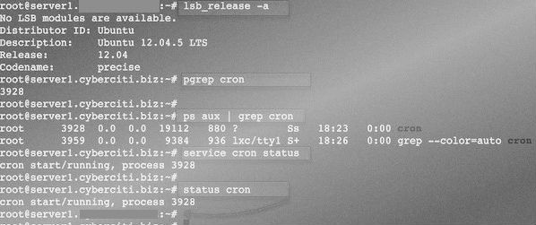

Ubuntu Linux проверка ошибок cron
Где хранится информация о запуске заданий по расписанию? Для проверки используем Ubuntu Linux 12.04/14.04 LTS сервер. Как проверит, запущен ли cron и правильно ли он работает?
Как проверить запущен ли cron (планировщик заданий)? Используйте команду pgrep или ps
pgrep cron ps aux | grep cron sudo service cron status sudo status cron
|
1 2 3 4 |
Результат

Так же вы можете проверить файл /var/log/syslog используя команду grep что бы получить информации о работе планировщика cron
$ sudo grep --color -i cron /var/log/syslog
|
1 |
Результат:
Jan 17 17:43:21 planetvenus cron[229]: (CRON) INFO (pidfile fd = 3) Jan 17 17:43:21 planetvenus cron[240]: (CRON) STARTUP (fork ok) Jan 17 17:43:21 planetvenus cron[240]: (CRON) INFO (Running @reboot jobs) Jan 17 18:01:01 planetvenus cron[240]: (*system*cache) NOT A REGULAR FILE (/etc/cron.d/cache) Jan 17 18:01:01 planetvenus cron[240]: (*system*output) NOT A REGULAR FILE (/etc/cron.d/output)
Где хранятся журналы работы cron на Ubuntu Linux?
Журналы хранятся в файле /var/log/cron.log. Вы можете настроить его следующим образом. Редактировать /etc/rsyslog.d/50-default.conf файл с помощью текстового редактора, например, vi или nano:
$ sudo vi /etc/rsyslog.d/50-default.conf
|
1 |
или
$ sudo nano /etc/rsyslog.d/50-default.conf
|
1 |
Найдите строку
|
1 |
Необходимо её раскомментировать, и перезапустить оба сервиса:
$ sudo service rsyslog restart
$ sudo service cron restart
|
1 2 |
Теперь все сообщения об ошибках в работе планировщика можно будет просматривать в файле
|
1 |
Воспользуйтесь различными командами для поиска нужной информации в логе
$ sudo grep что_нибудь/var/log/cron.log $ sudo more /var/log/cron.log $ sudo tail -f /var/log/cron.log $ sudo egrep -i 'error|log' /var/log/cron.log $ sudo tail -F /var/log/cron.log
|
1 2 3 4 5 |
$ sudo grep что_нибудь/var/log/cron.log $ sudo tail -f /var/log/cron.log |